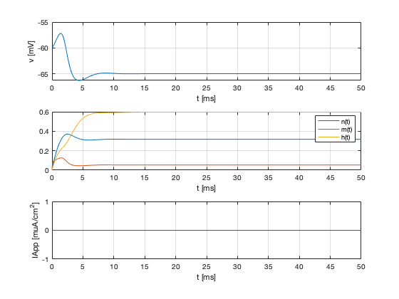

Warm up
Deafult values of the HH model. Let us verify that the cell achieves its resting potential
% Clear workspace and close windeos clear all, close all, clc; % Parameters p(1) = 1; % Cm: membrane capacitance [microFarads/cm^2] p(2) = 120; % gNa: sodium conductance [milliSiemens/cm^3] p(3) = 36; % gK: potassium conductance [milliSiemens/cm^3] p(4) = 0.3; % gL: leak conductance [milliSiemens/cm^3] p(5) = 50; % eNa: sodium Nernst potential [milliVolts] p(6) = -77; % eK: potassium Nernst potential [milliVolts] p(7) = -54.4; % eL: leak reversal potential [milliVolts] p(8) = 3^((20-6.3)/10); % phi: temperature factor, see ET, equation 1.44. % Initial Condition u0(1) = -60; % Initial voltange v [milliVolts] u0(2) = 0.0; % Initial value for activation variable n u0(3) = 0.0; % Initial value for activation variable m u0(4) = 0.0; % Initial value for inactivation variable h % Applied current IAppFun = @(t) zeros(size(t)); % Right-hand side function hh = @(t,u) HodgkinHuxley(t,u,p,IAppFun); % Timestep tspan = [0 50]; [t,U] = ode45(hh,tspan,u0); % Plot voltage subplot(3,1,1); plot(t,U(:,1)); xlabel('t [ms]'); ylabel('v [mV]'); grid on; % Plot activation and inactivation variables subplot(3,1,2); plot(t,U(:,2:4)); xlabel('t [ms]'); legend({'n(t)','m(t)','h(t)'}); grid on; % Plot applied current subplot(3,1,3); plot(t,IAppFun(t)); xlabel('t [ms]'); ylabel('IApp [muA/cm^2]'); grid on;
The system attains a steady state at . Let us estimate the proportion of open Na channels, and open K channels
nRest = U(end,2); mRest = U(end,3); hRest = U(end,4); pNa = mRest^3*hRest; pK = nRest^4; disp(sprintf('At rest, the proportion of open Na channels is %.6e', pNa)) disp(sprintf('At rest, the proportion of open K channels is %.6e', pK))
At rest, the proportion of open Na channels is 8.845130e-05 At rest, the proportion of open K channels is 1.018511e-02